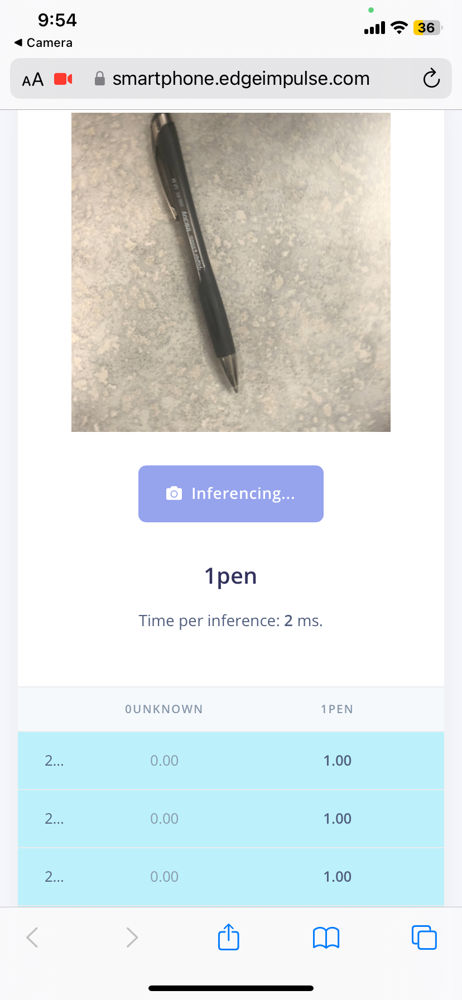

Back to Index
t1a08-machine-learning-rielly.html
What is Vision Machine Learning?
The steps to make a Machine Learning Model
- Login to EdgeImpulse.com
- Activate your phone as a device

- Images and set label to either "0unknown" or "1pen"
- Train your machine and make everything setup

- Finally check to see if the live machine detects a pen
